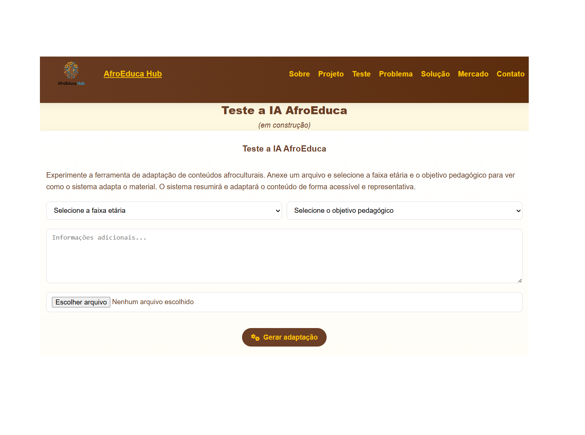

Coletividade
O círculo representa continuidade, encontro e construção compartilhada do conhecimento.
ANCESTRALIDADE • EDUCAÇÃO • TECNOLOGIA
Educação afro-brasileira, protagonismo negro e inovação conectados para transformar o aprendizado.
Um espaço para educadores criarem e adaptarem materiais pedagógicos com respeito às histórias, culturas e saberes afro-brasileiros e africanos.

NOSSA HISTÓRIA
O AfroEduca Hub conecta ancestralidade, tecnologia e oportunidades educacionais. A proposta é apoiar professores na criação de materiais afroculturais digitais, acessíveis e contextualizados, fortalecendo a representatividade em sala de aula.
Idealizado por Anthony Samuel Sobral de Freitas, é uma iniciativa vinculada à Teclabs Informática e Consultoria. A plataforma está em desenvolvimento: funcionalidades experimentais são identificadas como tal.

IDENTIDADE AFRO
Nossa linguagem visual parte do próprio logotipo: círculos como coletividade, linhas como conexão entre saberes e elos como memória entre gerações. Referências culturais específicas devem ser identificadas e contextualizadas, sem reduzir a diversidade africana a um único padrão.
O círculo representa continuidade, encontro e construção compartilhada do conhecimento.

História, arte, cultura e cotidiano como parte central da aprendizagem.

Diálogos históricos e culturais tratados com pluralidade, fontes e contexto.
FERRAMENTA PEDAGÓGICA • MVP 2.0
Cole qualquer texto — inclusive um artigo acadêmico — ou envie um arquivo. Escolha o público, a abordagem e o formato. O laboratório monta um prompt detalhado para uma IA adaptar o conteúdo, sem restringir você a uma lista de assuntos.
IMPACTO SOCIAL
Em 2026, a lei completa 23 anos. Alterou a LDB para tornar obrigatório o ensino de história e cultura afro-brasileira no ensino fundamental e médio, em escolas públicas e privadas.
Ampliou a redação da LDB para contemplar também a história e cultura indígena. O AfroEduca concentra-se na educação afrocultural, reconhecendo o contexto mais amplo da legislação.
Fontes oficiais: Lei 10.639/2003 · Lei 11.645/2008.
O desafio é ampliar o acesso a materiais de qualidade, contextualizados e apropriados para diferentes etapas de ensino, com autoria e validação docente.
TECNOLOGIA COM PROPÓSITO
O laboratório começa como gerador transparente de prompts pedagógicos, com entrada livre de texto e parâmetros de adaptação. A integração de IA para produzir materiais dentro da plataforma é uma próxima etapa, não uma funcionalidade já entregue.
O projeto preserva a autonomia do professor, a revisão crítica, a contextualização cultural e o cuidado com dados pessoais.
Consultar a versão original preservada →
PARTICIPE
Conheça o projeto, compartilhe sugestões e converse sobre colaboração e parcerias.